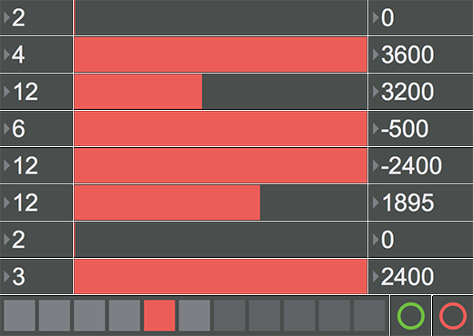
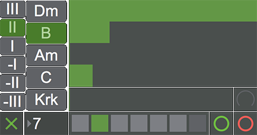
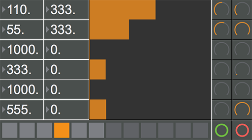
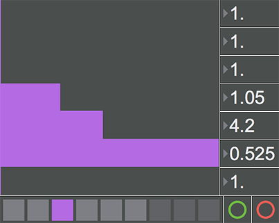
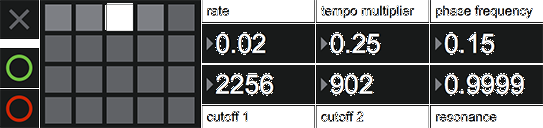
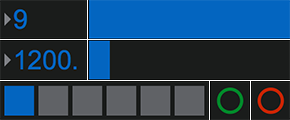

Klänge und Instrumente
Entwicklung
Für UNTEN wurden insgesamt acht Software-Instrumente in Max/MSP programmiert, die während der Installation in Echtzeit elektronische Klänge erzeugen. Die Klänge werden aus Oszillatoren, Rauschgeneratoren und Clicks generiert oder stammen aus den Aufnahmen einer Stromgitarre und eines Röhrenradios. Darüber hinaus wurden atmosphärische Klänge von Wasser, Wind und Regen verwendet.
Die Funktionsweisen der acht Instrumente basieren grundsätzlich auf denen von Synthesizern, Drum Machines, Sequencern und Samplern. Die Erweiterung besteht darin, dass in jedes Instrument an verschiedenen Stellen zufällige Prozesse integriert wurden, die den Klang jeder Einstellung mit der Zeit variieren – und sie damit über einen längeren Zeitraum abwechslungsreich und organisch klingen lassen.
Jedes Instrument wurde mit Parametern zur Klangmanipulation und einem Preset-Speicher ausgestattet, sodass bestimmte Einstellungen der Parameter wiederhergestellt werden können. Wird ein neues Stück ausgewählt, werden die dazugehörigen Presets für jedes aktive Instrument geladen. Durch die Anzahl der Besucher können die Instrumente und Presets nun in Echtzeit abgerufen werden.
Um plötzlich Sprünge während eines Preset-Wechsels zu vermeiden, kommen Überblendungen von wenigen Sekunden zum Einsatz.
Sampler
Klacker
Klacker ist eine polyrhythmische Drum Machine, die bis zu acht perkussive Klänge unterschiedlicher Metrik abzuspielen vermag. Als Klangmaterial dienen eigene Aufnahmen eines Röhrenradios beim Verstellen des Senders. Klanglich reichen diese von tieffrequentem Brummen über breitbandiges Rauschen bis hin zu kurzen Knacksern. Aus diesen Aufnahmen wurden acht sehr kurze Samples (wenige Millisekunden) entnommen und mit einer Hüllkurve versehen. Daraus ergeben sich Klänge, die eine große Ähnlichkeit zur Bass Drum, Snare und Hi Hat eines Schlagzeugs aufweisen.

Jeder Klang kann in allen geraden und ungeraden Taktarten abgespielt werden. So lassen sich beispielsweise die Grundschläge eines 4er-Taktes und die eines Tripel-Taktes gegenüberstellen. Die Betonung geschieht bei jedem Schlag zufällig und ist verknüpft mit dem Lautstärke-Fader des Klanges. Mit diesem Fader wird kein fester Wert, sondern ein Dynamik-Bereich eingestellt. Dass bedeutet, die Lautstärke jedes Schlages variiert je nach Einstellung innerhalb eines lauteren oder eines leiseren Bereichs.
Darüber hinaus lässt sich im letzten Schritt die Tonhöhe des Klanges in Cent-Schritten manipulieren. Extreme Einstellungen führen zu interessanten Ergebnissen.
thiD
Die Tonhöhenillusionen des thiD basieren auf dem sogenannten Shepard-Risset-Glissando nach Roger Shepard und Jean-Claude Risset, bei dem ein in der Tonhöhe kontinuierlich ansteigender (oder absteigender) Ton zu hören ist. Das Glissando wäre praktisch unendlich lang, wenn es unendlich lang gespielt und gehört werden würde. Tatsächlich wird für die Tonhöhenillusion nur ein zeitlich begrenztes Sample benötigt, das – in Endlosschleife abgespielt – den Eindruck erweckt, als würde es permanent ansteigen (oder absteigen).
Ein solches Sample wurde mit vier Sinus-Sweeps aufeinander folgender Oktaven in Audacity erzeugt. Der erste Sweep startet bei D endet auf d’, der zweite reicht von d’ bis d’’ und so weiter. Somit ergeben sich von der tiefsten zur höchsten Oktave die Sweeps 1, 2, 3 und 4. Diese werden so ineinander gemischt, das Sweep 1 von Null auf die halbe Lautstärke und Sweep 2 von der halben Lautstärke auf die volle Lautstärke eingeblendet werden. Analog dazu werden Sweep 3 und 4 ausgeblendet, einmal von der vollen Lautstärke auf die halbe Lautstärke (3) und einmal von der halben Lautstärke auf Null (4). Im Ergebnis verschwindet die höchste Oktave (Sweep 4) und wird langsam mit zweithöchsten Oktave (Sweep 3) ersetzt. In dieser Form rücken auch Sweep 2 und Sweep 1 nach und bei erneuter Wiedergabe des Samples wird der Eindruck gewonnen als würde der Ton kontinuierlich weiter ansteigen.
Um diesem Phänomen eine musikalischere Qualität hinzuzufügen, wurde die Tonhöhenillusion mittels Pitch Shifting zu Akkorden erweitert. Aus ein und dem selben Sample wurden durch jeweils vier Anpassungen in der Tonhöhe die Akkorde Dm, B, Am und C. Der Akkord Krk generiert vier zufällige Pitch Shifts und klingt dementsprechend disharmonisch.

Die Akkordwechsel finden automatisch nach einem einstellbaren Zeitintervall statt. Wobei jeder neue Wechsel lediglich mit einer Wahrscheinlichkeit von 50 Prozent tatsächlich ausgeführt wird, um auch hier eine gewisse Unberechenbarkeit zu erzeugen.
Ein weiterer Parameter betrifft die Richtung der Tonhöhenillusion (wobei an dieser Stelle Akkordhöhenillusion die treffendere Bezeichnung wäre). So kann zwischen einem aufsteigenden oder einem absteigenden Glissando ausgewählt werden, was durch das vor- oder rückwärts Abspielen des Samples realisiert wird. Zusätzlich zur Richtung kann die Geschwindigkeit reguliert werden, indem das Sample unterschiedlich schnell abgespielt wird.
Atmolar
Der Atmolar ist ein Granularsynthesizer, der als Klangmaterial sechs Atmosphären (verschiedene Aufnahmen von Wind, Meeresrauschen und Regen) verwendet. Jede Atmosphäre hat eine Länge von einer Minute. Das Instrument springt zufällig an eine Position innerhalb der Atmosphäre und gibt beispielsweise 110 Millisekunden als Grain (Sample) wieder. Danach springt das Instrument zur nächsten zufällig ausgewählten Position und so weiter. Bei sehr kurz eingestellten Grains erklingt ein chaotisches, digitales Rauschen, aus dem die ursprüngliche Atmosphäre nicht mehr zu identifizieren ist. Wird die Länge der Grains langsam erhöht, so deutet sich die Atmosphäre zunächst an und wird schließlich deutlich hörbar.

Der zweite Parameter manipuliert die Wiedergabegeschwindigkeit des Grains um einen zufälligen Wert zwischen 0 (keine Veränderung) und dem eingegebenen Maximalwert. Da die Wiedergabegeschwindigkeit direkten Einfluss auf die Tonhöhe des Grains hat, entstehen hier bizarre Klangtexturen, die die ursprüngliche Atmosphäre stark abstrahiert darstellen. Kleinere Maximalwerte führen wiederum dazu, dass die Atmosphäre leichter identifizierbar ist.
Über einen weiteren Regler wird die Wahrscheinlichkeit, mit der die Grains wiedergegeben werden, eingestellt. Diese reguliert die Häufigkeit ihres Auftretens. So werden bei geringen Wahrscheinlichkeiten große Pausen zwischen den Grains entstehen. Wird dieser Parameter gleichzeitig auf bis zu sechs Atmosphären angewendet, entstehen vielfältige Klangtexturen mit perkussivem Charakter.
Risset
Der Risset-Rhythmus – nach Jean-Claude Risset – ist eine akustische Täuschung, bei der das Tempo permanent schneller (oder langsamer) wird. Wie die Tonhöhenillusion basiert der Risset-Rhythmus ebenfalls auf einem zeitlich begrenzten Sample, welches in Endlosschleife wiedergegeben werden kann und dabei den Eindruck vermittelt, als würde sich das Tempo endlos beschleunigen (oder verlangsamen).
Hierfür werden zwei Audiospuren mit Einzelschlägen benötigt, deren Tempi sich linear ändern. Spur 1 beginnt bei der halben Geschwindigkeit und endet auf der vollen Geschwindigkeit (wobei diese frei wählbar ist), Spur 2 beginnt bei der vollen Geschwindigkeit und endet auf der doppelten Geschwindigkeit. Beide werden parallel wiedergegeben, während Spur 1 langsam eingeblendet und Spur 2 langsam ausgeblendet wird. Das Resultat ist ein beschleunigender Risset-Rhythmus.

Insgesamt wurden sechs Risset-Rhythmen mit unterschiedlichen perkussiven Klängen erstellt. Im Instrument werden diese in Endlosschleife wiedergegeben. Die Richtung und die Geschwindigkeit der Wiedergabe ist für jede Spur frei wählbar. So können die Spuren mit jeweils unterschiedlichen Einstellungen ineinander gemischt werden, woraus schwindelerregende, rhythmische Gebilde entstehen.
Solo und Drone
Die Sampler Solo und Drone besitzen jeweils nur einen Auslöser, der zufällige Prozesse in Gang setzt und dadurch Samples von bis zu drei Minuten Länge generiert. Diese ähneln sich im Klangcharakter und sind doch in ihrem Aufbau und ihrer Struktur mit jedem erneuten Auslösen unterschiedlich. Sie funktionieren unabhängig von den Zustandsänderungen innerhalb der Stücke und werden vereinzelt in Abhängigkeit von einer bestimmten Anzahl von Personen mit einer Wahrscheinlichkeit von 50 Prozent ausgelöst.
Solo verwendet sechs Noten, die einzeln auf einer E-Gitarren gespielt und aufgenommen wurden. Diese Aufnahmen werden rückwärts und in zufälliger Reihenfolge abgespielt. Zusätzlich erzeugt jede Note eine mehr oder weniger starke Rückkopplung. Nachdem das Ende des Samples erreicht ist, bleibt diese weiter im Hintergrund hörbar. Die Intensität der Rückkopplung wird zufällig für jede Note und bei jedem erneuten Auslösen ausgewählt.
Für Drone wurde jede Saite der E-Gitarre (offene Stimmung in D) mit einem E-Bow gespielt und einzeln aufgenommen. Beim Auslösen des Samplers werden die Aufnahmen parallel abgespielt, als würden alle Saiten gleichzeitig mit sechs E-Bows gespielt werden. Während der Wiedergabe wird jede Note mittels Pitch Shifting nach bestimmten Zeitintervallen zufällig um eine Terz, eine Quinte oder eine Oktave erhöht oder verringert.
Synthesizer
Pling
Der Synthesizer Pling generiert Clicks – sehr kurze und breitbandige Impulse, die zu den rein technischen Signalen zählen, gemeinhin jedoch als Störsignal aufgefasst werden. Die Clicks werden in Echtzeit mit einem Tiefpass und einem Resonanz-Filter bearbeitet. Die daraus entstehende Tonalität der Clicks führt zu einem fragilen Klangcharakter, ähnlich dem Anschlagen eines Glases.
Die Idee bestand darin, diesen Klang so unter den Füßen des Publikums wandern zu lassen, dass der Eindruck entsteht, als würde eine Hand voll Glasmurmeln auf den Boden fallen und sich nach allen Seiten verteilen. Inwieweit dies tatsächlich assoziiert wird, ist weniger von Bedeutung, als das ein abwegiges Klangereignis stattfindet.

Jedes Mal, wenn das Instrument ausgelöst wird, ist die Häufung der Clicks zu Beginn sehr hoch und lässt nach wenigen Sekunden nach. Dieses Verhalten wird in Echtzeit generiert und klingt mit jedem Auslösen unterschiedlich. Die Resonanzfrequenz ist zufällig und alterniert um zwei voreingestellte Werte (zum Beispiel 2256 Hz und 902 Hz), wodurch subtile Dissonanzen entstehen.
Sonar
Dieser additive Synthesizer generiert Impulse, die an das Sonar eines U-Bootes erinnern. Dabei wird eine Sinus-Welle mit variabler Frequenz durch eine Hüllkurve mit kurzem Attack und langem Release geformt. Die Impulse lösen immer synchron zum Tempo des jeweiligen Stückes aus. Um die Dauer zwischen den einzelnen Impulsen einzustellen, wird die Anzahl der Grundschläge angegeben, nach denen ein Impuls erklingen soll.
Zur Klangfärbung kommt zusätzlich ein Rauschgenerator zum Einsatz, der mit einem reinen Sinus moduliert wird. Daraus resultiert ein rauer und organischer Klang.

Ebenso wie in den vorher beschriebenen Instrumenten, findet sich auch hier ein Zufallsprozess wieder. Dieser sieht vor, dass jeder Impuls mit einer Wahrscheinlichkeit von 50 Prozent wiedergegeben wird und somit nicht jedes Mal auslöst. Dadurch wirkt die zeitliche Abfolge der Impulse origineller, da sie weniger vorhersehbar wird.